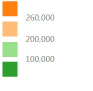

Industry Overview
Visualization of H-1B Application in Different Occupations
The radius of each circle represents the application number in each occupation every year:
Color shows the average annual wage in each industry:
